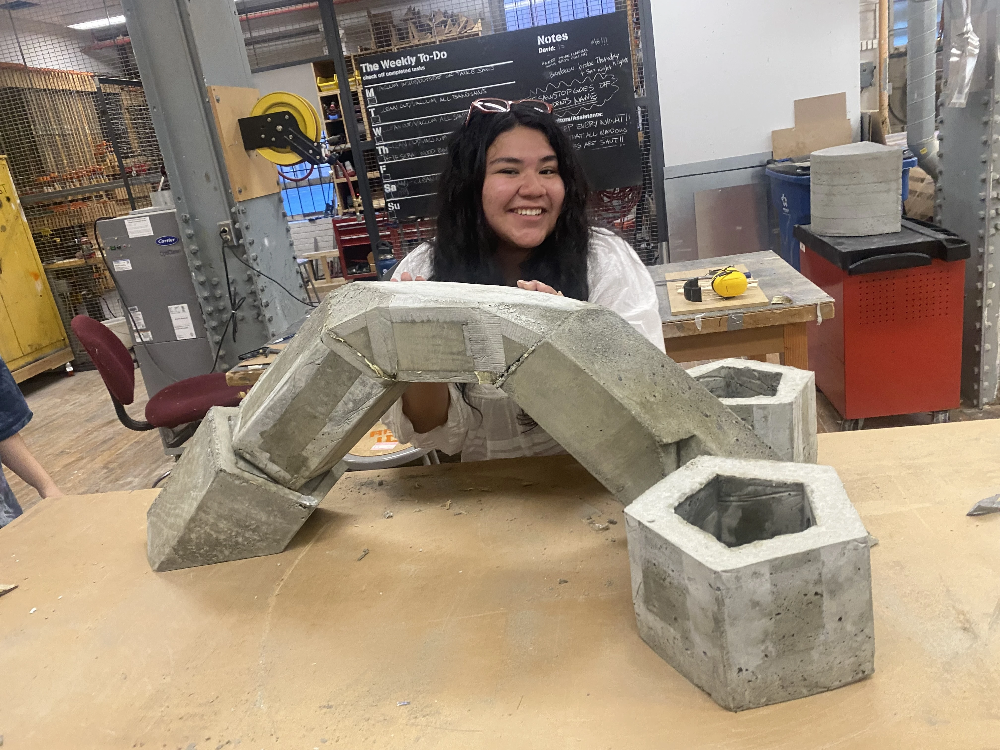
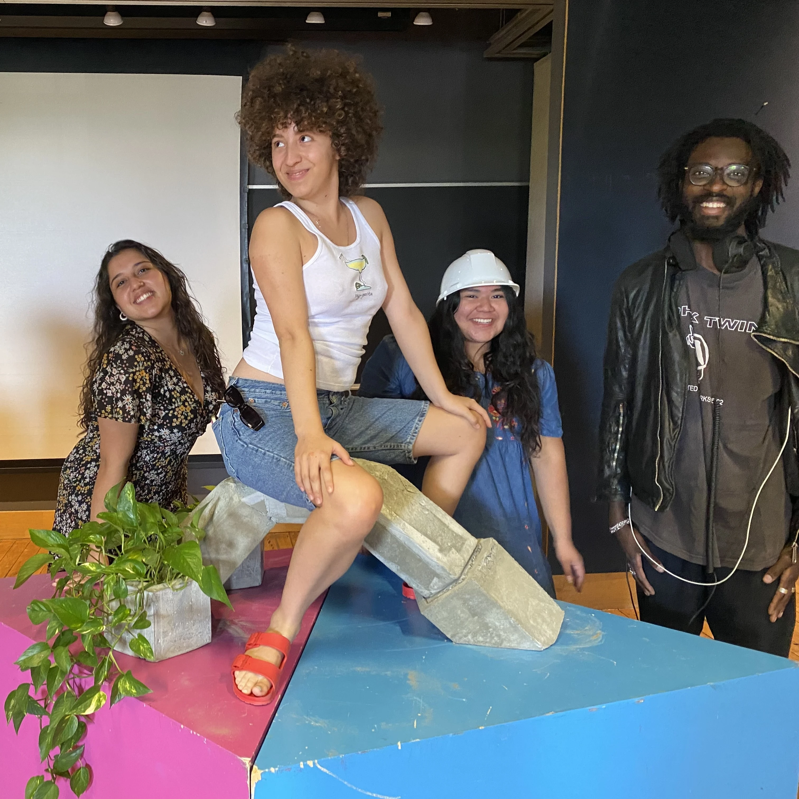
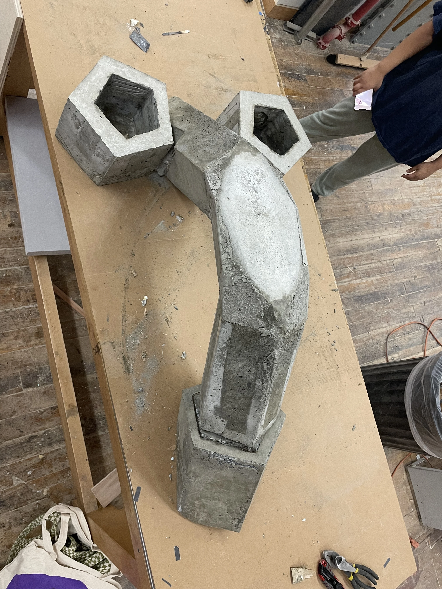

audio
textiles
architecture
visual
research
internal
papers and resources
undergrad thesis
daniel fishkin
computation
places and spaces
dream state sonification
multi entry horns
interview with oya damla
drains
cockrete
thesis research archive


